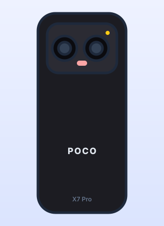
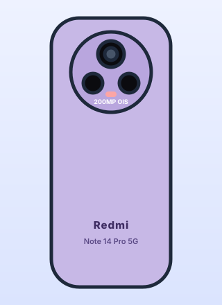
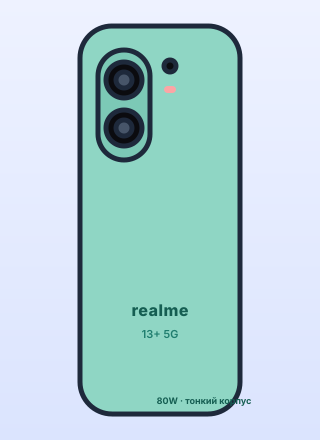
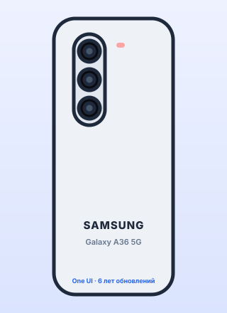
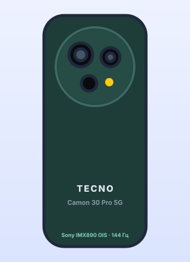

Ценовой диапазон 25 000–30 000 ₽ в 2026 году окончательно превратился в «золотую середину» рынка. Флагманские фишки прошлых лет спустились сюда почти в полном составе: экраны 120–144 Гц AMOLED, оптическая стабилизация камеры, зарядка на 67–100 Вт, влагозащита и стереодинамики. Переплата за верхний сегмент теперь оправдана только ради топовой ночной съёмки, титановых корпусов и перископа. Но и экономят производители не бесплатно: почти во всех моделях этого класса вы получите пластиковую рамку, заглушку вместо ультраширокой камеры (или её символическое качество), медленный поворотный вибромотор и отсутствие беспроводной зарядки. Разбираемся, за что в 2026 году не стоит платить дважды, что обязательно требовать от смартфона до 30 000 ₽ и какие пять моделей закрывают этот бюджет лучше всего.
Что происходит в сегменте 25 000–30 000 ₽
За что уже не нужно переплачивать:
- Плавность интерфейса: 120 Гц AMOLED стал стандартом даже у моделей за 22–25 тысяч.
- Резкие фото с рук и в сумерках: OIS на основном модуле есть у большинства достойных аппаратов.
- Скорость зарядки: 45–90 Вт заряжают телефон до 100% за 40–60 минут, разница с флагманскими 120 Вт на практике минимальна.
- Автономность: батареи 5000–7000 мА·ч на новых энергоэффективных техпроцессах дают полтора-два дня работы.
На чём производители всё ещё экономят:
- Материалы: пластиковая рамка вместо металла почти без исключений, стекло спины — не всегда.
- Ультраширокая и макро камеры: чаще это формальные 8 Мп «для галочки» или вовсе заглушка.
- Вибромотор: дешёвый роторный вместо линейного X-axis — мелочь, которую замечаешь каждый день.
- Мелочи флагманов: беспроводная зарядка, ИК-порт и полноценная защита IP68 встречаются, но не гарантированы.
Чек-лист: что требовать от смартфона до 30 000 ₽ в 2026 году
- Экран. Только AMOLED с частотой 120 Гц и адекватным управлением подсветкой: аппаратный DC Dimming или высокочастотный ШИМ от 1920 Гц. Низкочастотный ШИМ (240–480 Гц) — повод отказаться, если глаза чувствительны к мерцанию.
- Камера. Обязательна оптическая стабилизация (OIS) на основном модуле — именно она, а не мегапиксели, определяет резкость вечерних кадров и плавность видео. Сенсор желательно от 1/1.7″ и крупнее.
- Железо. Минимум 8/256 ГБ, память — UFS 3.1 или быстрее (UFS 2.2 в 2026 году неприемлема). Процессор — от 600–800 тысяч баллов в AnTuTu; этого хватает на любые игры на средних настройках и комфортную эмуляцию до PS2.
- Питание. Аккумулятор от 5000 мА·ч (а лучше 6000–6500), проводная зарядка от 45–67 Вт и — важно — комплектный блок питания в коробке. Модели «зарядка в комплект не входит» закладывайте +1500–2500 ₽ к цене.
Топ-5 смартфонов до 30 000 ₽
POCO X7 Pro
POCO снова собрала самый мощный смартфон сегмента: MediaTek Dimensity 8400-Ultra с полноценными восемью производительными ядрами Cortex-A725 выдаёт около 1,6 млн баллов AnTuTu — это уровень прошлогодних флагманов. Любые актуальные игры идут на максимальных настройках, а эмуляция PS2 и GameCube — эталонная для этих денег. Экран — 6,67″ 1,5K (2712×1220) «Flow AMOLED» 120 Гц с пиковой яркостью около 1300 нит и высокочастотным ШИМ. Батарея крупная — 6000 мА·ч, зарядка 90 Вт с блоком в комплекте, а корпус получил полную защиту IP68.

Внешний вид: крупный прямоугольный блок камеры со сдвоенным объективом на 50 Мп с OIS, композитная рамка, дисплей 1,5K Flow AMOLED 120 Гц. Аккумулятор 6000 мА·ч и турбозарядка 90 Вт — в комплекте.
- Dimensity 8400-Ultra — лучшая производительность сегмента (~1,6M AnTuTu)
- Резкий экран 1,5K, 120 Гц, яркий на солнце
- Батарея 6000 мА·ч и зарядка 90 Вт с блоком в коробке
- Полноценная защита IP68, UFS 4.0 и LPDDR5X
- Композитная (пластиковая) рамка
- Ультраширокая камера слабая, телефото нет
- Под очень долгой нагрузкой всё же греется
- HyperOS с рекламой и предустановками из коробки
Кому идеально: геймерам и энтузиастам эмуляции, которым нужен максимум кадров и запас мощности на годы, а материалы корпуса и продвинутая съёмка вторичны.
Наш выбор в категории «игровая мощь до 30 000 ₽». Сравните цену текущего хита POCO X7 Pro и свежей новинки линейки POCO X8 Pro на Яндекс Маркете.
Реклама. ООО «Яндекс Маркет», ИНН 9704254424, erid: 5jtCeReNx12oak2pVaJ4tQo
Реклама. ООО «Яндекс Маркет», ИНН 9704254424, erid: 5jtCeReNx12oak2pVaJ5DfT
Xiaomi Redmi Note 14 Pro 5G
Самая беспроигрышная покупка сегмента: у модели нет одной выдающейся черты, но нет и слабых мест. Основная камера — 200 Мп на сенсоре Samsung HP3 с оптической стабилизацией: в режиме объединения пикселей она даёт детализированные и чистые кадры днём и в сумерках, плюс «бесплатный» 2- и 4-кратный зум обрезкой без потери резкости. Дисплей 6,67″ изогнутый по краям 1,5K AMOLED 120 Гц с пиковой яркостью до 3000 нит — один из лучших в классе на солнце. Есть честная защита IP68/IP69K (выдерживает даже струю горячей воды), аккумулятор 5500 мА·ч и зарядка 45 Вт с блоком в коробке. Платформа Dimensity 7300-Ultra (~0,7 млн AnTuTu) звёзд не хватает, но для всего, кроме тяжёлых игр на ультра, её достаточно.

Внешний вид: круглый островок камеры с доминирующим модулем на 200 Мп и OIS, экран с изогнутыми боковыми гранями, стеклянная спина. Защита IP68/IP69K, зарядка 45 Вт с блоком.
- Камера 200 Мп с OIS и качественным кроп-зумом
- Очень яркий дисплей до 3000 нит
- Защита IP68/IP69K — рекорд надёжности сегмента
- Полная сбалансированность: нет провальных параметров
- Средний игровой потенциал, до POCO X7 Pro далеко
- Изогнутый экран — случайные нажатия и блики по краям
- Медленный роторный вибромотор
- Реклама и предустановленный софт в HyperOS
Кому идеально: покупателю, которому нужен «просто хороший телефон на 3–4 года» без изучения спецификаций — универсал для съёмки, сети и повседневных задач.
realme 13+ 5G
Ставка realme — на энергоэффективность и скорость дозаправки. Внутри Dimensity 7300 Energy: тот же класс, что у Redmi Note, но с акцентом на низкое энергопотребление — телефон почти не греется в играх и мессенджерах, а батарея 5000 мА·ч за счёт «холодного» чипа спокойно доживает до вечера при активном дне. Зарядка 80 Вт SUPERVOOC с блоком в комплекте восполняет заряд примерно за 45 минут. Корпус тонкий (около 7,9 мм) и лёгкий, экран — 6,67″ AMOLED 120 Гц с яркостью до 2000 нит, основная камера 50 Мп на сенсоре Sony LYT-600 с OIS.

Внешний вид: вертикальный овальный модуль с двумя объективами (главный 50 Мп Sony с OIS), тонкий лёгкий корпус, стеклянная спина с фактурой. Зарядка 80 Вт SUPERVOOC — в комплекте.
- Очень холодный и энергоэффективный чип
- Зарядка 80 Вт с блоком в коробке
- Тонкий и лёгкий корпус
- Основная камера с OIS и хорошая автономность
- Экран FHD+, а не 1,5K
- Ультраширокой камеры нет вовсе
- Защита только IP65
- realme UI с большим числом предустановок
Кому идеально: тем, кто ценит стабильную температуру корпуса, минимальное время у розетки и лёгкий тонкий аппарат, а разрешение экрана и ультраширик не критичны.
Samsung Galaxy A36 5G
Samsung в этом сегменте продаёт не «железо на грамм», а спокойствие на годы вперёд. Galaxy A36 получает 6 лет обновлений Android и патчей безопасности, а One UI остаётся самой отлаженной и удобной оболочкой без рекламы. Есть 6,7″ Super AMOLED 120 Гц с яркостью около 1200 нит, стереодинамики с Dolby Atmos, защита IP67 и основная камера 50 Мп с OIS, которая благодаря обработке Samsung выдаёт стабильно предсказуемый результат. Расплата — скромный по бенчмаркам Snapdragon 6 Gen 3 (~0,6 млн AnTuTu), зарядка всего 45 Вт и отсутствие зарядного блока в комплекте.

Внешний вид: фирменная «капсула» с тремя отдельными объективами в столбик (главный 50 Мп с OIS), матовая пластиковая спина, плоские грани. Блока зарядки в коробке нет.
- 6 лет официальных обновлений — рекорд сегмента
- One UI без рекламы, отличная поддержка и сервис
- Стереозвук Dolby Atmos и защита IP67
- Предсказуемая камера с OIS
- Блока зарядки в коробке нет, максимум 45 Вт
- Слабее конкурентов в играх
- Дизайн и материалы без изюминки
- Цена держится у верхней границы бюджета
Кому идеально: тем, кто держит телефон 4–6 лет, ценит чистый и стабильный софт, гарантийную сеть бренда и не гонится за кадрами в играх.
TECNO Camon 30 Pro 5G
TECNO давно перестала быть «просто дешёвым брендом» и в линейке Camon делает акцент на съёмке и дисплее. Camon 30 Pro 5G несёт флагманский сенсор Sony IMX890 с OIS — тот же, что стоит во многих аппаратах вдвое дороже, — и в паре с фирменной обработкой даёт детализированные дневные снимки и стабилизированное видео 4K. Фронтальная камера 50 Мп с автофокусом — одна из лучших в сегменте для влогов и созвонов. Экран — 6,78″ AMOLED с частотой 144 Гц, плавнее, чем у всех конкурентов подборки. Платформа Dimensity 8200-Ultimate обеспечивает около 1,2 млн AnTuTu, зарядка 70 Вт с блоком, батарея 5000 мА·ч.

Внешний вид: крупный круглый декоративный модуль камеры с главным объективом Sony IMX890 и OIS, кожзам или матовое стекло на спине. Экран 6,78″ AMOLED 144 Гц, зарядка 70 Вт с блоком.
- Флагманский сенсор Sony IMX890 с OIS
- Лучшая фронтальная камера сегмента для видео
- Дисплей 144 Гц — самый плавный в подборке
- Мощный Dimensity 8200-Ultimate и зарядка 70 Вт с блоком
- Оболочка HiOS требует ручной чистки от предустановок
- Срок обновлений короче, чем у Samsung и Xiaomi
- Слабая защита от воды (IP54)
- Меньше сервисных центров в небольших городах
Кому идеально: блогерам и тем, кто много снимает на телефон и созванивается по видео, а также ценителям максимально плавной прокрутки.
Сводная таблица сравнения
| Параметр | POCO X7 Pro | Redmi Note 14 Pro 5G | realme 13+ 5G | Galaxy A36 5G | TECNO Camon 30 Pro 5G |
|---|---|---|---|---|---|
| Процессор | Dimensity 8400-Ultra | Dimensity 7300-Ultra | Dimensity 7300 Energy | Snapdragon 6 Gen 3 | Dimensity 8200-Ultimate |
| AnTuTu (ориентир) | ~1,6 млн | ~0,7 млн | ~0,65 млн | ~0,6 млн | ~1,2 млн |
| Экран | 6,67″ Flow AMOLED, 1,5K, 120 Гц | 6,67″ изогнутый AMOLED, 1,5K, 120 Гц, до 3000 нит | 6,67″ AMOLED, FHD+, 120 Гц | 6,7″ Super AMOLED, FHD+, 120 Гц | 6,78″ AMOLED, FHD+, 144 Гц |
| Основная камера (OIS) | 50 Мп, OIS | 200 Мп Samsung HP3, OIS | 50 Мп Sony LYT-600, OIS | 50 Мп, OIS | 50 Мп Sony IMX890, OIS |
| Батарея / зарядка | 6000 мА·ч / 90 Вт, блок в комплекте | 5500 мА·ч / 45 Вт, блок в комплекте | 5000 мА·ч / 80 Вт, блок в комплекте | 5000 мА·ч / 45 Вт, блока в комплекте нет | 5000 мА·ч / 70 Вт, блок в комплекте |
| Защита от воды | IP68 | IP68 / IP69K | IP65 | IP67 | IP54 |
| Обновления ОС | 3 года + 4 года патчей | 3 года + 4 года патчей | 2 года + 3 года патчей | до 6 лет | 2 года + 3 года патчей |
| Цена (ориентир) | 27 000–30 000 ₽ | 25 000–29 000 ₽ | 24 000–27 000 ₽ | 28 000–30 000 ₽ | 25 000–29 000 ₽ |
Цены и точные ревизии моделей ориентировочные и зависят от объёма памяти, продавца и акций; конкретный чип и набор датчиков могут отличаться по регионам.
Итоговый вердикт
Лучший выбор для большинства — Redmi Note 14 Pro 5G
Максимум здравого смысла за деньги: очень яркий 1,5K-экран, камера 200 Мп с OIS, рекордная защита IP68/IP69K, крупная батарея и блок зарядки в коробке. Единственный заметный компромисс — средний игровой потенциал.
Если важнее всего игры и эмуляция — POCO X7 Pro
Dimensity 8400-Ultra и ~1,6 млн AnTuTu — это производительность флагмана за 28–30 тысяч, плюс батарея 6000 мА·ч, зарядка 90 Вт и полноценный IP68. Мириться придётся с композитной рамкой и слабой ультрашириком.
Если важны холодный корпус и скорость зарядки — realme 13+ 5G
Энергоэффективный Dimensity 7300 Energy почти не греется, зарядка 80 Вт восполняет заряд за 45 минут, корпус тонкий и лёгкий. Компромисс — экран FHD+, отсутствие ультраширокой камеры и защита лишь IP65.
Если нужен телефон на 5+ лет — Samsung Galaxy A36 5G
6 лет обновлений, вылизанный One UI без рекламы, стерео Dolby Atmos и сервисная сеть бренда. Смиритесь с отсутствием блока зарядки в коробке и скромными бенчмарками.
Если снимаете фото и видео — TECNO Camon 30 Pro 5G
Флагманский сенсор Sony IMX890 с OIS, лучшая в сегменте фронталка и экран 144 Гц. Взамен — более короткий срок поддержки, защита только IP54 и оболочка, которую придётся почистить.